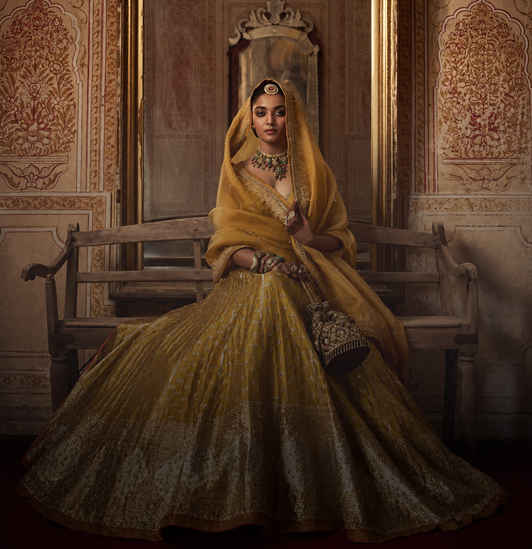
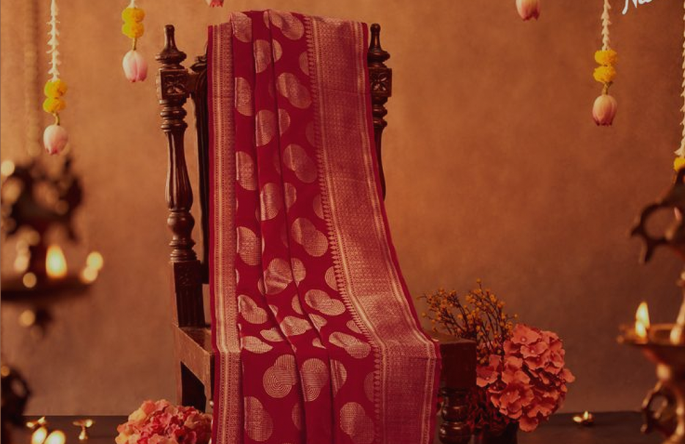
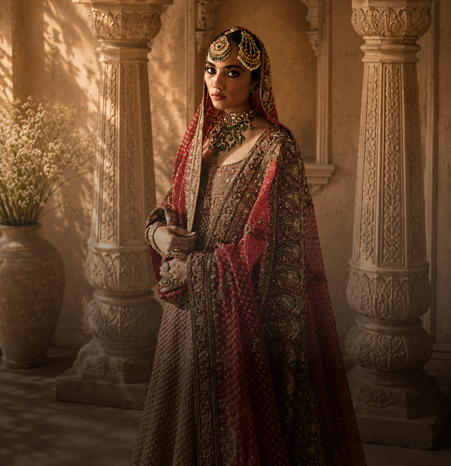
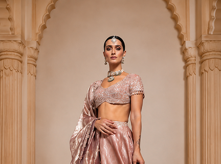
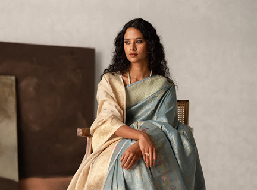
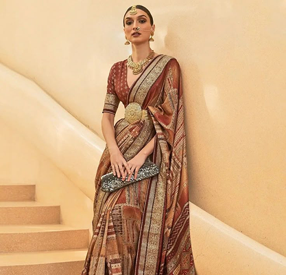
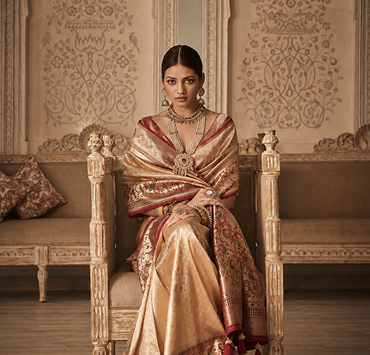

Royal Narratives Reimagined
A closer look into heirloom craftsmanship, regal silhouettes, and ceremonial dressing inspired by royal artistry.
Know moreDiscover the artistry behind Banarasi textiles where intricate motifs, ceremonial symbolism, and handwoven narratives come together to create timeless expressions of heritage. Every weave carries memory, preserving traditions shaped across generations of craftsmanship.


A closer look into heirloom craftsmanship, regal silhouettes, and ceremonial dressing inspired by royal artistry.
Know more
Meet the makers preserving delicate motifs and generations of textile knowledge.
Know more
Discover the delicate language of weaving passed through generations.
Know moreHow ceremonial jewellery completes the language of the drape.
Know more
Stories of patient hands, heritage looms, and enduring techniques.
Know moreDiscover the delicate language of weaving passed through generations.
Know more
Contemporary silhouettes shaped by the beauty of traditional craft.
Know more
Celebration dressing inspired by light, texture, and memory.
Know more